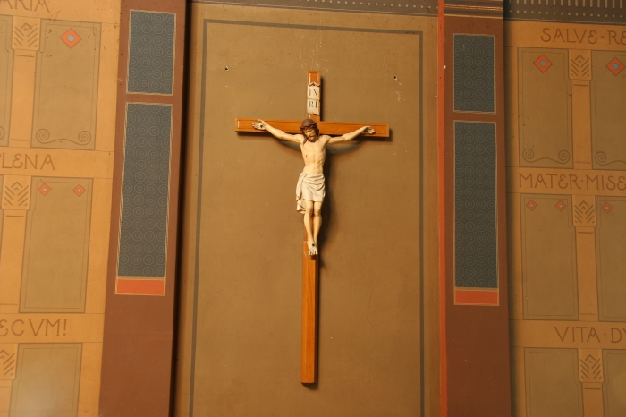

<?php
	$tabulka = true;

	require ('_include/php/zaklad.php');

	titulek ('Beuronské umìní - opatství sv. Gabriela');

	menu ('Zpìt','gabriel-dopredu-01.html');

	zahlavi ();
?>



<p style="text-align:center">
	Na tomto místì byl zazdìn rozsáhlý oblouk do chóru jepti¹ek a není pøíli¹ zdobený.
</p>

<?php
  zapati ();
?>
